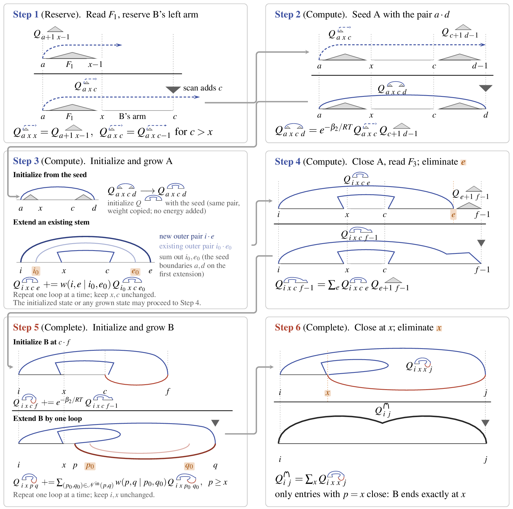
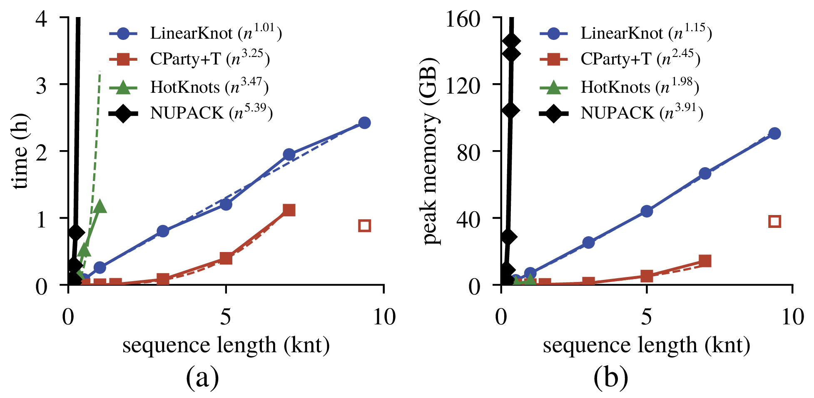
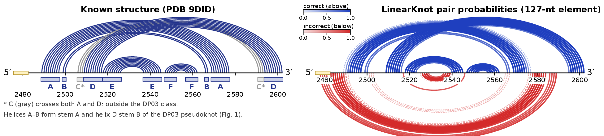

TL;DR
LinearKnot is the first linear-time approximation of the Dirks and Pierce (DP03) pseudoknot partition function, the model underlying NUPACK’s pseudoknot predictions. It folds the 9,392 nt Rous sarcoma virus genome in 2.4 hours, where exact DP03 would need an estimated 40,000 years, and matches exact DP03 base-pair probabilities with a median RMSD of \(9.2\times10^{-7}\) on 418 PseudoBase RNAs.
Abstract
Pseudoknots are a common RNA structure where two or more helices cross, and they are central to many functional RNAs, including frameshifting signals, telomerase RNA, riboswitches and viral genomes. However, predicting RNA structures with pseudoknots is notoriously hard, so the vast majority of RNA secondary structure prediction algorithms and tools only considered pseudoknot-free structures. With arbitrary pseudoknots, finding the minimum free energy (MFE) structure is NP-hard, and computing the partition function is even harder. Dirks and Pierce (DP03) pioneered the first pseudoknot partition function, which underlies NUPACK’s pseudoknot model, but it takes \(\mathcal{O}(n^5)\) time and \(\mathcal{O}(n^4)\) memory, making it only practical for very short sequences. While the much simpler pseudoknot-free prediction can run in linear time with approximate dynamic programming like LinearFold and LinearPartition, these techniques do not transfer easily to pseudoknotted prediction like DP03: a partial pseudoknot leaves a gap that is filled by its crossing partner, whose complementary sequence may still lie ahead of the scan, so it cannot be ranked by its inside weight. Even with an estimate of this missing weight, directly pruning DP03 remains expensive: scoring each partial stem sums over the unspecified boundaries of its partner’s complementary sequence. We present LinearKnot, a linear-time approximation of DP03 in three passes: (a) a LinearPartition calculation gives pseudoknot-free weights; (b) a second pass builds tables that estimate each partial stem’s crossing partner; and (c) a third scans a left-to-right reformulation of DP03 that reserves the 5′ nucleotides in the pseudoknot helix for subsequent pairing, keeping the states with the largest estimated contribution. Without pruning, this reformulation computes exactly DP03’s pseudoknot recursion, over the same structures with the same energies. Kept states are combined by DP03’s exact recursions, so the only approximation is which states the beam keeps. The scan of LinearKnot is linear in time and memory; end-to-end, time grows linearly (\(n^{1.01}\)) and memory marginally above linear (\(n^{1.15}\)) from 1,000 to 9,392 nt, because the supporting passes are not yet fully beam-bounded. It folds the 9,392 nt Rous sarcoma virus genome in 2.4 hours and 90.5 GB, where exact DP03 would need an estimated 40,000 years and 54 million GB of memory (extrapolating NUPACK’s measured \(n^{5.39}\) time and \(n^{3.91}\) memory), and matches exact DP03 base-pair probabilities on 418 PseudoBase RNAs with a median RMSD of \(9.2\times10^{-7}\) (mean \(6.8\times10^{-5}\)). Our code is available at https://github.com/gautammilan/LinearKnot.
Method Overview
- Pass 1: LinearPartition gives pseudoknot-free inside and outside weights.
- Pass 2: builds pseudoknot-free filler and partner tables that estimate each partial stem’s crossing partner.
- Pass 3: a beamed left-to-right reformulation of DP03 (LR-DP03) that reserves the partner’s arm inside the state, so each state has one role and can be ranked by inside × estimated outside weight. Without pruning, LR-DP03 computes exactly DP03’s partition function; the only approximation is which states the beam keeps.

Results
Scalability
On prefixes of the Rous sarcoma virus genome up to the full 9,392 nt, the time of LinearKnot grows as \(n^{1.01}\) and its memory as \(n^{1.15}\); the full genome takes 2.4 h and 90.5 GB. NUPACK (exact DP03) grows as \(n^{5.39}\) in time and \(n^{3.91}\) in memory, and takes 18.8 h and 283 GB at 418 nt.

Accuracy
| Method | PseudoBase, seq. avg. | ArchiveII, family avg. | ||
|---|---|---|---|---|
| All pairs P / R / F1 |
Crossing P / R / F1 |
All pairs P / R / F1 |
Crossing P / R / F1 |
|
| LinearKnot | 75.3 / 78.9 / 76.4 | 76.1 / 69.1 / 67.1 | 44.0 / 51.7 / 47.1 | 5.9 / 20.6 / 7.0 |
| LinearPartition-V + T | 65.2 / 55.1 / 58.7 | 37.3 / 2.8 / 3.0 | 47.8 / 56.4 / 51.3 | 3.9 / 2.5 / 1.5 |
| LinearPartition-C + T | 77.3 / 54.1 / 61.4 | 60.9 / 3.8 / 4.2 | 59.3 / 51.8 / 54.3 | 7.4 / 1.4 / 1.1 |
| IPknot | 76.5 / 64.8 / 68.9 | 62.3 / 30.5 / 32.0 | 54.2 / 55.5 / 54.2 | 6.7 / 13.7 / 6.2 |
| IPknot (RNAfold) | 70.3 / 59.7 / 63.4 | 54.4 / 25.3 / 26.9 | 51.7 / 51.9 / 51.2 | 7.7 / 13.4 / 6.5 |
| CParty + T | 71.7 / 71.8 / 71.0 | 75.7 / 52.9 / 51.8 | 50.9 / 52.2 / 51.1 | 6.6 / 2.6 / 1.8 |
| HotKnots 2.0 | 75.1 / 73.1 / 73.1 | 76.8 / 49.1 / 47.7 | – | – |
Case Study
The gag-pol frameshift element of Rous sarcoma virus. LinearKnot recovers the H-type pseudoknot, and its ThreshKnot structure has the highest F1 against PDB 9DID (0.71 vs 0.67 for HotKnots).

BibTeX
@article{gautam2026linearknot,
title = {LinearKnot: Linear-Time Approximation of the Pseudoknot Partition Function},
author = {Gautam, Milan and Mathews, David H. and Huang, Liang},
year = {2026},
note = {Preprint}
}